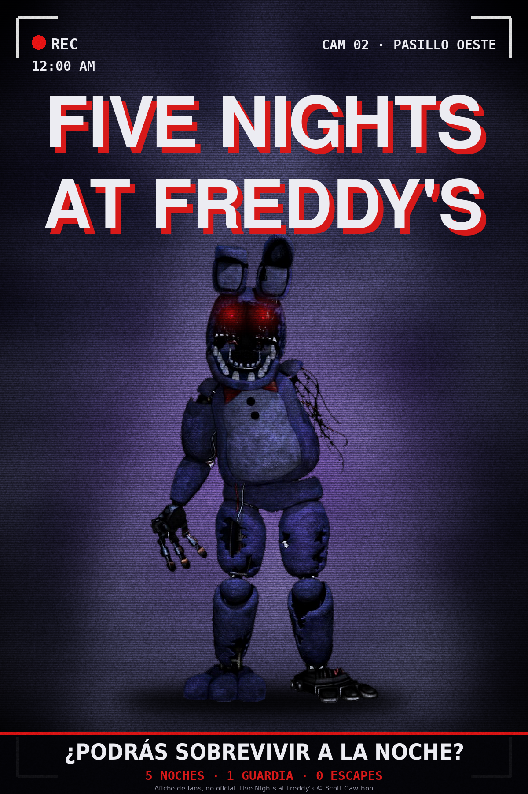

imagenes/fnf.pngPROYECTO 01
Five Nights at Freddy's
Objetivo y proceso: Diseñar un póster que transmita misterio, esfuerzo y determinación. La escalera representa el recorrido y la figura solitaria el camino que se avanza con perseverancia.